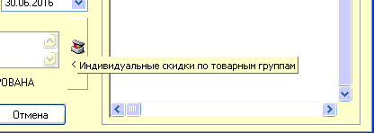
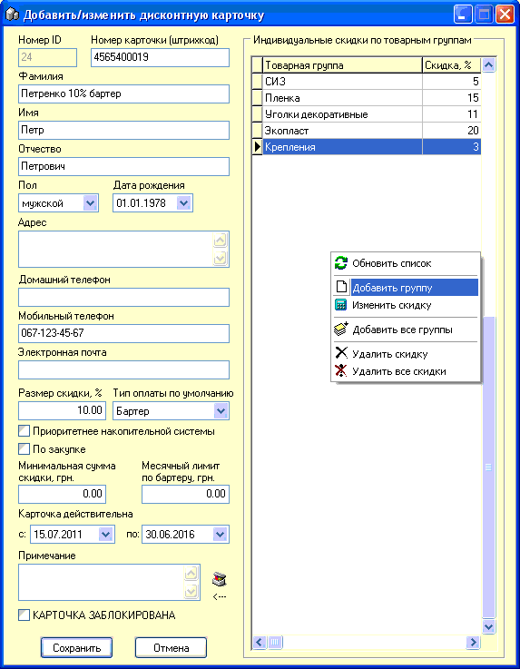

Номер - присваивается автоматически, не редактируется.
Номер карточки (штрихкод) - заносится либо вручную, либо автоматически сканером штрихкода или ридером магнитной полосы с самой пластиковой карточки. Должен содержать правильный префикс (см. также раздел "Настройки программы" подраздел "Скидки") - первые 5 цифр и далее собственно сам номер карточки (желательно всего 10 цифр, из них первые пять - префикс, остальные номер, тип штрихкода Code128Auto). Примечание: по поводу изготовления пластиковых карт и выдачи префикса обращайтесь в Ваш сервисный центр или к разработчику ПО SuperMarket.
ФИО - желательно написать ФИО хозяина карточки.
Пол, Дата рождения, Телефоны, Электронная почта - то же самое.
Размер скидки, % - процентная ставка скидки.
Тип оплаты по умолчанию - при расчете картой в Чеке, автоматически будет устанавливаться указанное в этом параметре значение типа оплаты, кроме как если выбран пункт "выбор кассира". Эта опция работает только если установлен соответствующий флажок на вкладке "Чек" в настройках программы (см. соответствующий раздел справки).
Приоритетнее накопительной системы - дает возможность предоставлять индивидуально назначенную скидку, даже если выбран в настройках тип дисконтной системы "Накопительная". Эта опция работает только если установлен соответствующий флажок на вкладке "Скидки 2" в настройках программы (см. соответствующий раздел справки).
По закупке - разрешает отпускать товар по закупочной цене, т.е. скидка составляет 100% наценки. Эта опция работает только если установлен соответствующий флажок на вкладке Скидки в настройках программы (см. соответствующий раздел справки).
Минимальная сумма скидки, грн - мин.сумма покупки свыше которой начинает действовать карточка. Если 0 - то ограничений нет.
Месячный лимит по бартеру, грн - не дает возможности отпустить по карте чек с типом оплаты бартер, если с 1 числа текущего месяца превышено указанное в окошке значение. Часто используется для того, чтобы персонал не мог выбрать больше размера своей зарплаты в счет неё и т.д.
Карточка действительна с: по: - срок действия карточки. Примечание: по умолчанию при создании новой карточки срок действия ставится равным двум годам с момента выдачи карточки.
Примечание - любая сопутствующая инофрмация.
КАРТОЧКА ЗАБЛОКИРОВАНА - блокировка карты в экстренных ситуациях, до выяснения, например, утери или кражи карты.
С правой стороны, внизу формы находится кнопка и надпись ---> При нажатии справа от формы открывается панель индивидуальных для этой карточки скидок по указанным товарным группам (для включения опции см. подраздел "Вкладка "Скидки 2" раздела "Настройки программы", также необходимо, чтобы дисконтная карточка уже была сохранена). Эта система скидок не работает одновременно с "накопительной скидкой", "вечерней скидкой" и "бескарточной" скидкой в зависимости от суммы чека.

Добавить новую группу, на которую дается индивидуальная скидка или произвести с уже добавленными группами какие-либо действия можно при помощи контекстного меню, вызываемого правой кнопкой мыши. Изменения в список скидок на товарные группы сохраняются немедленно, после их осуществления, при этом не нужно закрывать карточку с сохранением кнопкой "Сохранить". Опции что будет происходить, если группа вообще не добавлена или добавлена с 0% см. в подразделе "Скидки 2" раздела "Настройки программы".

Сервис для работы со списком товарных групп предоставляет контекстное меню через правую кнопку мыши. Функции пунктов меню понятны из их названий.